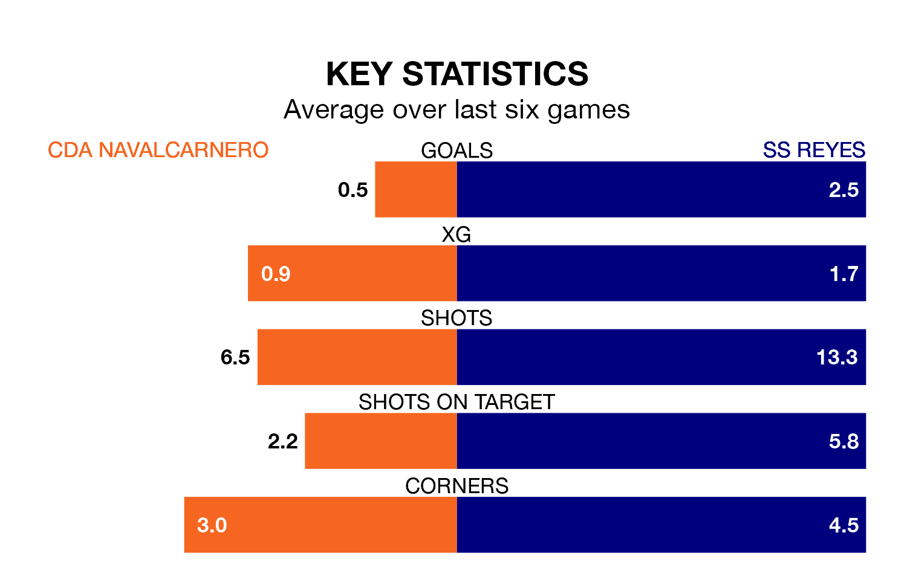

CDA Navalcarnero host SS Reyes in Sunday's match at the Estadio Municipal Mariano González looking to bounce back from defeat last time out in the Segunda División RFEF Group 5.
CDA Navalcarnero, who sit 15th in the league after 28 games, fell to a 0-1 away defeat to CD Mensajero on March 24.
They face a SS Reyes side who picked up a win in their last match, a 7-1 victory against CD Numancia, and who sit first in the table.
With 49 goals in 28 games so far this season, SS Reyes are the league's highest scorers with 1.8 goals per game. And they are conceding fewer than average, letting in 19 goals at a rate of 0.7 per game.
CDA Navalcarnero, meanwhile, are below average scorers, with 0.9 goals per game, compared to a league average of 1.1. They have conceded 1.1 goals per game.
In the last 10 years, CDA Navalcarnero and SS Reyes have played each other on nine occasions. CDA Navalcarnero won two of them, SS Reyes four, and they drew three times.
On average, CDA Navalcarnero scored 1.0 goal and SS Reyes 1.7 in those matches.
Their last meeting was on November 19, when they played out a 0-0 draw.
The hosts are in mixed form in the Segunda División RFEF Group 5, with two wins and three draws from their last six games.
With three wins and two draws over that period, the away side's form is slightly better – they have taken 11 points from 18, compared to CDA Navalcarnero's nine.
Updated: 12:16 (UTC), 25/03/24